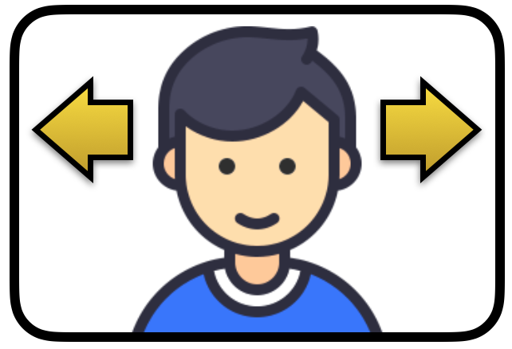
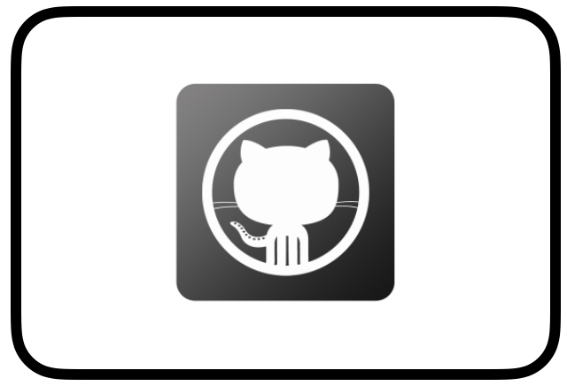

Grant camera permission for the page
|
|
|
This page uses the browsers video signal as input for a
simple motion detector to move the teddy bear. Please enable the
capture of video signal in your browser.
|
Move your head in front of camera.
|
|  |
The motion detector calculates the average movement for
several frames and teddy bear looks in this direction. To fine
tune the detection parameter and control the video signal you
may 'Open Controls' on the right top of the page. |
Fork on GitHub
|
|  |
This experiment has been developed by
Markus Sprunck. The complete source code is available. It is
implemented in Javascript based on three.ja and glfx.js
libraries. You may for me at GitHub and visit my blog www.sw-engineering-candies.com |